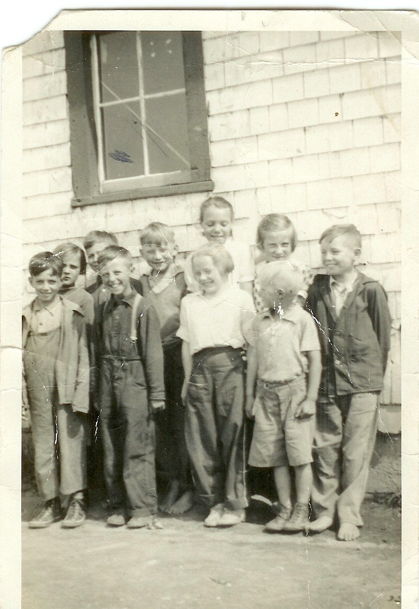

The Family Chronicle
No. 120 July 18, 2006
____________________________________________________________________

Back row: Catherine MacDougall, George Watling, Don Glendenning, Mildred MacDonald, Frances MacLean and Murray MacNaughton. Front row: ? Adams, Kenneth MacDonald, Mabel MacLean and Cameron MacDonald taken at the Little Branch School in 1938. (Photo courtesy of Bertie MacLean)
Reading material
We always seemed to have reading material available.
Mother liked to read and I can recall Mother heading out to the Ladies League, WMS or the WI with a book under her arm to exchange with Mrs. Harper or another in the community. Occasionally she would buy a book, always a used one, and it too circulated. I cannot ever remember my Mother buying a new novel or a periodical.
The Bible was a prized book along with the Presbyterian Record and the Presbyterian Message which was the voice of the Presbyterian Missionary Society. The “Messages” were kept in a little chest/trunk upstairs in the “little room”, the one that the kitchen stove pipe ran through. Messages were great sources of items when we were required to have a reading at our Young People’s meetings – which was practically every meeting.
We subscribed to the Family Herald and Weekly Star which arrived every Wednesday in the mail. It was printed in Ontario. It was oriented to the farming sector but also included world and Canadian news. Several pages at the back of the paper were filled with advertising. It also had cartoons, jokes and the “funnies”. I remember looking through the advertisements and from them made contact with a company near Toronto, Warco Grease and Oil, from which I purchased grease, oil, paint, etc and sold it around Black River. This was a source of my spending money.
The Chatham Gazette was published, as I recall, twice a week and came in the mail. The Gazette carried local news as well as Canadian and world news especially news arising from WW2. The Gazette also carried obituaries but they only confirmed what everyone already knew. A little later in my life, the Gazette became the source o information as to where dances were being held.
Junior Red Cross papers were distributed to students through the school.
Peddlers traveled the countryside by horse selling odds and ends such as needles, thread, combs and trinkets from door to door. The wagon had a small box, perhaps the size of a trunk, built on the back to carry their wares. They did not come into the yard but one went to the end of the lane and stopped the peddler if you wanted something. The only one I recall was Abe Asouf with his slow-moving horse. Sometimes a peddler stayed over night and I recall one peddler left behind a newspaper in, as I recall, Arabic. That was a real item of curiosity.
Strange as it may sound, Eaton’s and Simpson’s catalogues were also a source of reading material.
The library in the Little Branch School consisted of one bookcase about three feet wide and four feet high. I cannot ever remember taking books from it to read. Neither can I remember a library in the Miramichi Rural High School but there may have been one. I cannot recall the first library I encountered but it was likely at Teachers’ College in Fredericton when I was seventeen.
Chums was a boy’s book. It was large, as I recall, 11 by 17 inches, and twice as thick as Eaton’s catalogue. Kennie MacDonald had copies, received as Christmas gifts by his Aunts, and I remember borrowing a couple.
For a while we had “Big Little Books”. They were small books, perhaps 3 inches by four inches by one and a quarter inches thick. The neat thing about these were the small photos in the upper right hand corner of each page. If one used one’s thumb to flip the pages, the action figures in the small photos seemed to move.
I must have had comic books but cannot remember buying them.
Recently when sorting some things in the basement, I came across some of my early books. One was a Boy Scout book given to me one Christmas by Betty Ann Walker, the daughter of a family Lillian worked for in Boston. (The family also sent me a Lionel wind-up train one Christmas.)
I also found “an airplane spotters guide” which showed the silhouettes of planes, and gave their specifications and marking. It probably was an English book and would be useful there for spotting both friendly and enemy aircraft – we did not have many enemy aircraft flying over the Miramichi. I also have a booklet with coloured photos of ships.
Hazy, Lazy Days of Summer
We’ve had a very warm summer so far with many humid days. Occasionally we would have such days in the Miramichi but, for the most part, evenings were cool and bedrooms cooled off for sleeping. There were occasions, however, when we would put a blanket on the ground in the front yard, under the old apple tree, and spend the early part of the night outside or perhaps even sleep outside all night.
The Family Chronicle (Copyright) is an occasional newsletter published by Don Glendenning and posted on the family website. It is intended to share information about my family, community and the times in which I grew up. While every effort is made to be accurate, errors are likely to occur. Comments, enquiries and information may be sent to 62 Queen Elizabeth Drive, Charlottetown, PEI, C1A 3A9. Tel: 902 892 5859. Email: dglende@auracom.com Web: www.glendenning.net/don